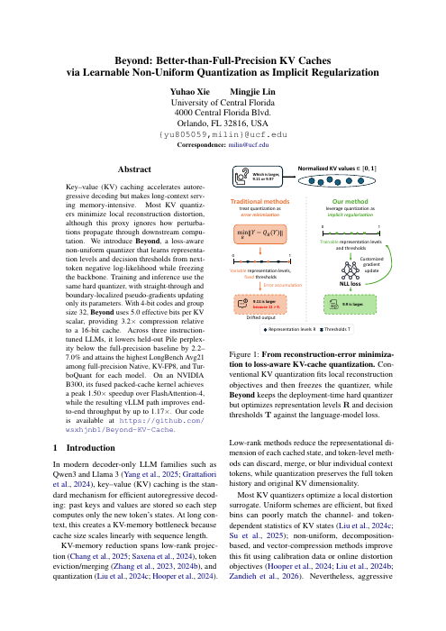

Beyond: Better-than-Full-Precision KV Caches via Learnable Non-Uniform Quantization as Implicit Regularization
EMNLP 2026，主会 · 第一作者
从隐式正则化的视角，研究可学习非均匀 KV Cache 量化。
我是中佛罗里达大学计算机工程博士研究生，研究方向为大模型高效推理，重点关注 KV Cache 量化与 GPU 内核优化。
我的工作覆盖方法与系统：学习紧凑的 KV 表示、开发融合注意力内核，并将评分优化集成到 vLLM。此前曾在同花顺参与大模型推理研究与工程开发。
研究兴趣

EMNLP 2026，主会 · 第一作者
从隐式正则化的视角，研究可学习非均匀 KV Cache 量化。
面向 CUDA GPU 的 vLLM 0.29 工具调用评分插件，用于有限 JSON 键序候选族。保留原生 LM head 投影形状与完整 JSON/EOS 概率，减少归一化、排名计算和 CPU 传输开销。
完整双轮 Agent 实测加速 1.08 倍。 Qwen2.5-3B · DGX Spark（GB10）· 六组配对测速 · 八个固定流程 · 相较原生全量评分。
将 KV 按需反量化、注意力得分计算、在线 Softmax 与 Value 加权累加融合到解码内核，在寄存器中重构压缩 K/V，避免在显存中生成完整的高精度 KV 副本。
在实测配置下推理加速 40%。 Llama 2 7B · 单张 NVIDIA H100 · 相较 Hugging Face 实现。
计算机工程博士在读
电气与计算机工程硕士
电气与计算机工程学士
大语言模型研究实习生。开发 CUDA 量化内核，并集成 FlashAttention 与分页 KV Cache。
软件工程实习生。参与 ARM 固件、G-code 处理与 FPGA 光栅图像并行处理。
欢迎交流大模型高效推理与 GPU 系统研究，以及相关合作和工作机会。请通过邮件联系。